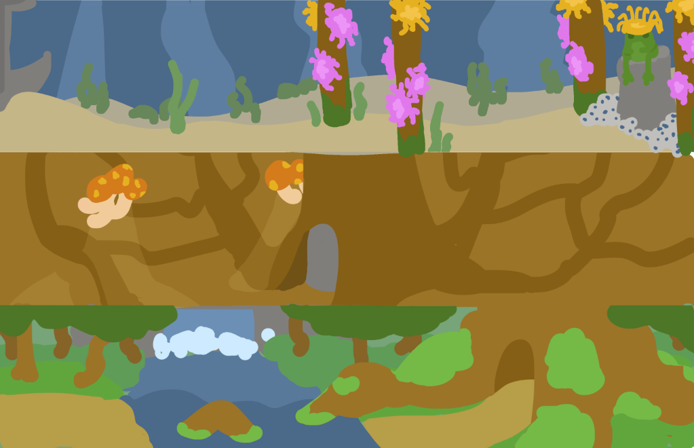
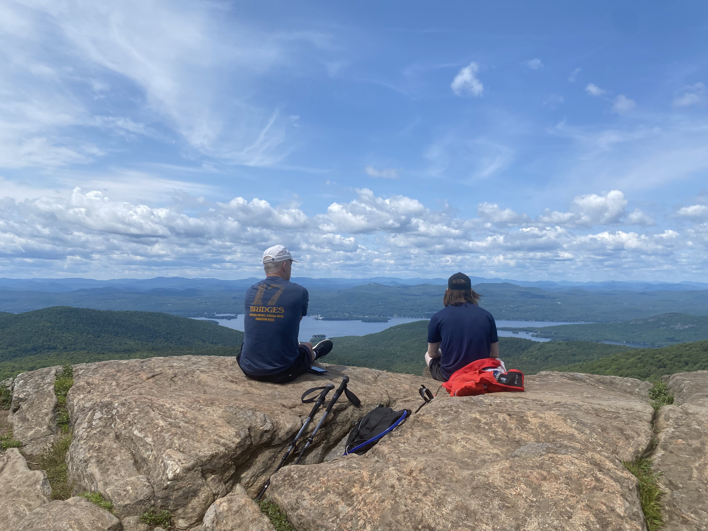

I'm pursuing a BA in Computer Science at Boston University.
I've studied:
Intro to CS 1&2, Combinatoric Structures, Algorithms, Computational Systems, Geometric Algorithms, Probability in Computing, Computer Languages, Foundations of Data Science and The Theory of Computation
But the courses I've enjoyed most have been Contemporary Art, Cosmology, and The Evolution of the Human Diet
I also help run the BU Brazilian Jiujitsu club.
Jiujitsu is a martial art focused on grappling. Through jiujitsu I've gained athleticism and confidence, and running the club has allowed me to practice my management and graphic design skills.

I'm proud to say that beyond our social and welcoming culture, BUBJJ is also a competitive force to be reckoned with- taking home first place in every collegiate tournament I've participated in thus far. For more updates on the club, check out our Instagram
Professional Work
I've worked professionally on front end, back end, and game development. Additionally, I have years of experience both volunteering and working as a programming instructor. If you're interested in learning more, I've detailed specifics in my Resume. Alternatively, you can read my code on Github.
If you want to work with me, send me an email at aidanp@rkhur.st.
Making Games
Like many, I was inspired to learn coding by my love for video games. It's been 9 years, and a whole lot of math classes since I started on that journey, but I am still passionate about creating my own games. Along the way, I've made lots of little games (Like Wave) But within the last 3 years, I've made a more focused effort to grow as an illustrator, story-teller, and game developer. I'm super excited to share the results of these efforts soon, but until then I'll leave you with some teaser concept art: 
Breaking Games
Just as I love making games, I love seeing how other people make their games. Working backwards is a fascinating way to understand the development process, and it feels like a superpower when I can dig through someone else's assembly code to understand a tough boss, or find an exploit to become overpowered. Over on my Github, you can read a sample of a CS:GO cheat I made. That project was beyond fun, and helped me solidify a deep understanding of memory manipulation and software decompiling
I'm a son, a brother, and a friend.
I couldn't be the man I am today, or the man I will be, without the support I've received from family, friends, teachers, and competitors. I wouldn't be myself if the people in my life hadn't shaped me, and I want to express my sincere gratitude for that.
To me, a good life means sharing happiness and understanding.
I love to get some fresh air, longboarding or hiking with friends and family. 
I'm also passionate about and inspired by art. Some of my all time favorite memories are in breathtaking Museums,
and chaotic concert crowds.

Lastly, I'd be remiss to forget my adorable pets, who keep my home extra cuddly.